Sinh quái vật
Trong phần này, chúng ta sẽ sinh quái vật ngẫu nhiên dọc theo một đường đi. Khi kết thúc, bạn sẽ có các quái vật đi lang thang trên bàn chơi.
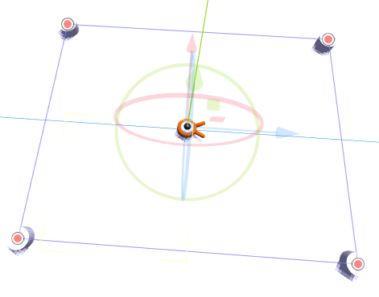
Nhấp đúp vào main.tscn trong dock FileSystem để mở scene Main.
Trước khi vẽ đường đi, chúng ta sẽ thay đổi độ phân giải của trò chơi. Trò chơi có kích thước cửa sổ mặc định là 1152x648. Chúng ta sẽ đặt nó thành 720x540, một khung hình nhỏ gọn.
Vào Project -> Project Settings.

Nếu bạn vẫn đang mở Input Map, hãy chuyển sang tab General.
Ở menu bên trái, đi xuống Display -> Window. Ở bên phải, đặt Viewport Width thành 720 và Viewport Height thành 540.
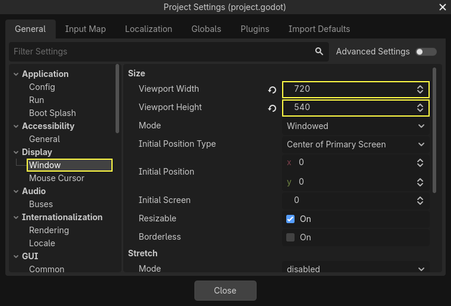
Tạo đường sinh quái
Giống như trong bài hướng dẫn game 2D, bạn sẽ thiết kế một đường đi và dùng một node PathFollow3D để lấy mẫu các vị trí ngẫu nhiên trên đó.
Tuy nhiên, trong 3D, việc vẽ đường đi phức tạp hơn một chút. Chúng ta muốn nó bao quanh khung nhìn của game để quái vật xuất hiện ngay bên ngoài màn hình. Nhưng nếu vẽ một đường đi, chúng ta sẽ không thấy nó trong bản xem trước của camera.
Để tìm giới hạn của khung nhìn, chúng ta có thể dùng một số mesh giữ chỗ. Viewport của bạn vẫn nên được chia làm hai phần, với bản xem trước của camera ở phía dưới. Nếu không phải vậy, hãy nhấn Ctrl + 2 (Cmd + 2 trên macOS) để chia khung nhìn làm hai. Chọn node Camera3D và nhấp vào ô đánh dấu Preview ở viewport phía dưới.
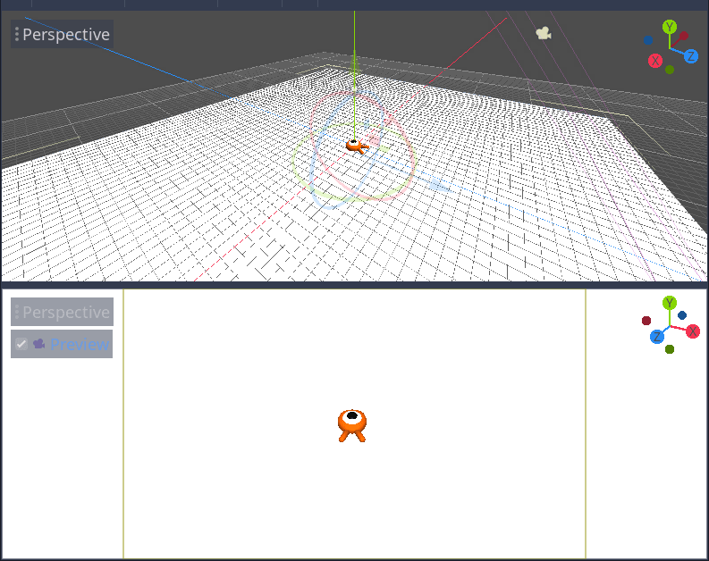
Thêm các hình trụ giữ chỗ
Hãy thêm các mesh giữ chỗ. Thêm một Node3D mới làm con của node Main và đặt tên là Cylinders. Chúng ta sẽ dùng nó để nhóm các hình trụ. Chọn Cylinders và thêm một node con MeshInstance3D
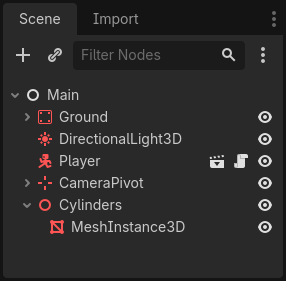
Trong Inspector, gán một CylinderMesh cho thuộc tính Mesh.
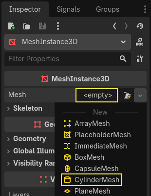
Đặt viewport phía trên sang góc nhìn trực giao từ trên xuống bằng menu ở góc trên bên trái của viewport. Ngoài ra, bạn có thể nhấn phím 7 trên bàn phím số.
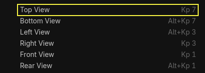
Lưới có thể gây rối mắt. Bạn có thể bật/tắt nó bằng cách vào menu View trên thanh công cụ và nhấp View Grid.
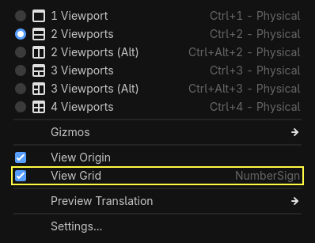
Giờ bạn cần di chuyển hình trụ dọc theo mặt phẳng mặt đất, đồng thời nhìn vào bản xem trước của camera ở viewport phía dưới. Tôi khuyên bạn nên dùng tính năng bắt dính lưới (grid snap) để làm việc này. Bạn có thể bật/tắt nó bằng cách nhấp vào biểu tượng nam châm trên thanh công cụ hoặc nhấn Y.
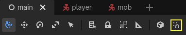
Di chuyển hình trụ sao cho nó nằm ngay bên ngoài khung nhìn của camera ở góc trên bên trái.
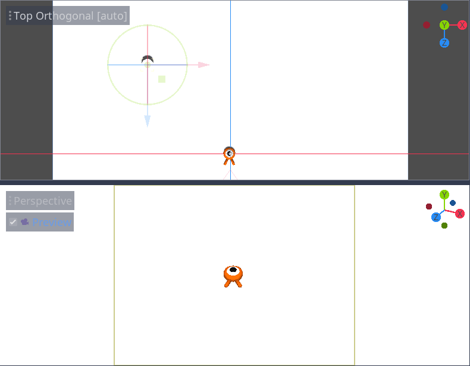
Chúng ta sẽ tạo các bản sao của mesh và đặt chúng xung quanh khu vực chơi. Nhấn Ctrl + D (Cmd + D trên macOS) để nhân bản node. Bạn cũng có thể nhấp chuột phải vào node trong dock Scene và chọn Duplicate. Di chuyển bản sao xuống dọc theo trục Z màu xanh dương cho đến khi nó nằm ngay bên ngoài bản xem trước của camera.
Chọn cả hai hình trụ bằng cách giữ phím Shift và nhấp vào hình trụ chưa được chọn, rồi nhân bản chúng.
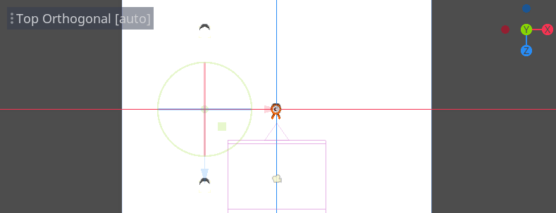
Di chuyển chúng sang phải bằng cách kéo trục X màu đỏ.
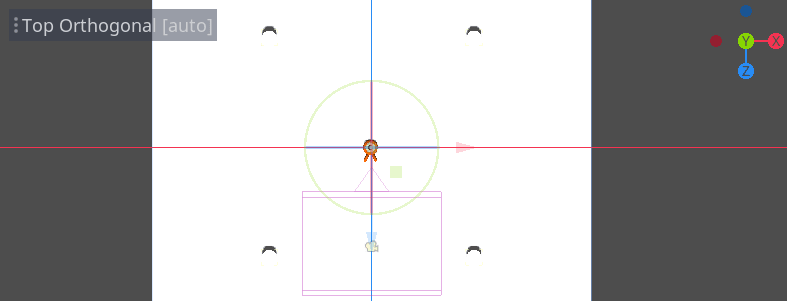
Chúng hơi khó nhìn khi có màu trắng, phải không? Hãy làm chúng nổi bật bằng cách gán cho chúng một material mới.
Trong 3D, material xác định các thuộc tính hình ảnh của một bề mặt như màu sắc, cách nó phản chiếu ánh sáng, và nhiều thứ khác. Chúng ta có thể dùng chúng để thay đổi màu của một mesh.
Chúng ta có thể cập nhật cả bốn hình trụ cùng lúc. Chọn tất cả các mesh instance trong dock Scene. Để làm vậy, bạn có thể nhấp vào cái đầu tiên rồi giữ Shift và nhấp vào cái cuối cùng.
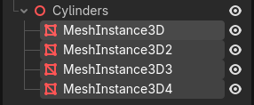
Trong Inspector, mở rộng mục Material và gán một StandardMaterial3D cho slot 0.
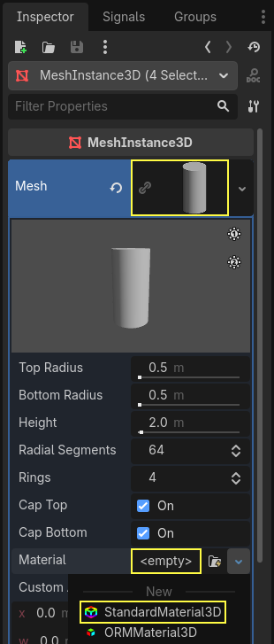
Nhấp vào biểu tượng hình cầu để mở resource material. Bạn sẽ thấy bản xem trước của material và một danh sách dài các mục chứa đầy thuộc tính. Bạn có thể dùng chúng để tạo đủ loại bề mặt, từ kim loại đến đá hay nước.
Mở rộng mục Albedo.
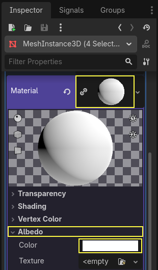
Đặt màu thành một màu tương phản với nền, chẳng hạn như cam sáng.
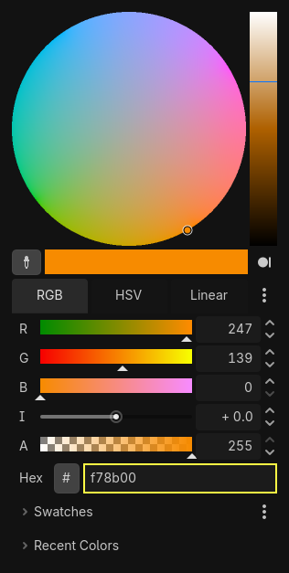
Giờ chúng ta có thể dùng các hình trụ làm vật dẫn hướng. Thu gọn chúng trong dock Scene bằng cách nhấp vào mũi tên màu xám bên cạnh. Từ giờ trở đi, bạn cũng có thể bật/tắt hiển thị của chúng bằng cách nhấp vào biểu tượng con mắt bên cạnh Cylinders.
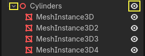
Thêm một node con Path3D vào node Main. Trên thanh công cụ, bốn biểu tượng sẽ xuất hiện. Nhấp vào công cụ Add Point, biểu tượng có dấu "+" màu xanh lá.
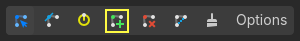
Ghi chú
Bạn có thể di chuột lên bất kỳ biểu tượng nào để xem tooltip mô tả công cụ đó.
Nhấp vào tâm của mỗi hình trụ để tạo một điểm. Sau đó, nhấp vào biểu tượng Close Curve trên thanh công cụ để khép kín đường đi. Nếu có điểm nào hơi lệch, bạn có thể nhấp và kéo để đặt lại vị trí cho nó.
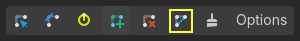
Đường đi của bạn sẽ trông như thế này.
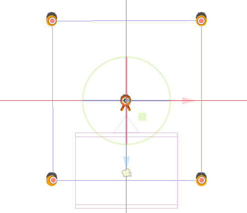
Để lấy mẫu các vị trí ngẫu nhiên trên đường đi, chúng ta cần một node PathFollow3D. Thêm một PathFollow3D làm con của Path3D. Lần lượt đổi tên hai node thành SpawnLocation và SpawnPath. Các tên này mô tả rõ hơn mục đích chúng ta sẽ dùng chúng.
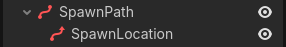
Như vậy, chúng ta đã sẵn sàng viết code cho cơ chế sinh quái vật.
Sinh quái vật ngẫu nhiên
Nhấp chuột phải vào node Main và gắn một script mới cho nó.
Đầu tiên, chúng ta export một biến ra Inspector để có thể gán mob.tscn hoặc bất kỳ quái vật nào khác cho nó.
extends Node
@export var mob_scene: PackedScene
using Godot;
public partial class Main : Node
{
// Don't forget to rebuild the project so the editor knows about the new export variable.
[Export]
public PackedScene MobScene { get; set; }
}
Chúng ta muốn sinh mob theo các khoảng thời gian đều đặn. Để làm vậy, chúng ta cần quay lại scene và thêm một timer. Tuy nhiên, trước đó, chúng ta cần gán file mob.tscn cho thuộc tính mob_scene ở trên (nếu không nó sẽ là null!)
Quay lại màn hình 3D và chọn node Main. Kéo mob.tscn từ dock FileSystem vào ô Mob Scene trong Inspector.
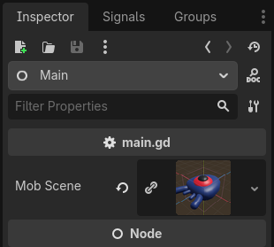
Thêm một node Timer mới làm con của Main. Đặt tên là MobTimer.
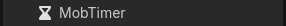
Trong Inspector, đặt Wait Time của nó thành 0.5 giây và bật Autostart để nó tự động bắt đầu khi chúng ta chạy trò chơi.
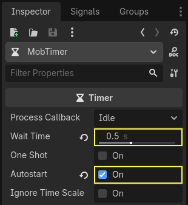
Timer phát ra signal timeout mỗi khi chạy hết Wait Time. Theo mặc định, chúng tự động khởi động lại, phát signal theo chu kỳ. Chúng ta có thể kết nối với signal này từ node Main để sinh quái vật mỗi 0.5 giây.
Trong khi MobTimer vẫn đang được chọn, hãy chuyển đến dock Signals ở bên phải và nhấp đúp vào signal timeout.
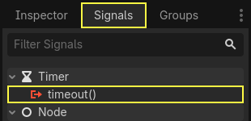
Kết nối nó với node Main.
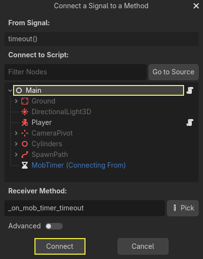
Thao tác này sẽ đưa bạn trở lại script, với một hàm _on_mob_timer_timeout() mới còn trống.
Hãy viết code cho logic sinh mob. Chúng ta sẽ:
Tạo instance của scene quái vật.
Lấy mẫu một vị trí ngẫu nhiên trên đường sinh quái vật.
Lấy vị trí của người chơi.
Gọi phương thức
initialize()của mob, truyền cho nó vị trí ngẫu nhiên và vị trí của người chơi.Thêm mob làm con của node Main.
func _on_mob_timer_timeout():
# Create a new instance of the Mob scene.
var mob = mob_scene.instantiate()
# Choose a random location on the SpawnPath.
# We store the reference to the SpawnLocation node.
var mob_spawn_location = get_node("SpawnPath/SpawnLocation")
# And give it a random offset.
mob_spawn_location.progress_ratio = randf()
var player_position = $Player.position
mob.initialize(mob_spawn_location.position, player_position)
# Spawn the mob by adding it to the Main scene.
add_child(mob)
// We also specified this function name in PascalCase in the editor's connection window.
private void OnMobTimerTimeout()
{
// Create a new instance of the Mob scene.
Mob mob = MobScene.Instantiate<Mob>();
// Choose a random location on the SpawnPath.
// We store the reference to the SpawnLocation node.
var mobSpawnLocation = GetNode<PathFollow3D>("SpawnPath/SpawnLocation");
// And give it a random offset.
mobSpawnLocation.ProgressRatio = GD.Randf();
Vector3 playerPosition = GetNode<Player>("Player").Position;
mob.Initialize(mobSpawnLocation.Position, playerPosition);
// Spawn the mob by adding it to the Main scene.
AddChild(mob);
}
Ở trên, randf() tạo ra một giá trị ngẫu nhiên trong khoảng từ 0 đến 1, đúng với giá trị mà progress_ratio của node PathFollow cần: 0 là điểm đầu của đường đi, 1 là điểm cuối. Đường đi chúng ta đã thiết lập bao quanh viewport của camera, nên bất kỳ giá trị ngẫu nhiên nào trong khoảng 0 đến 1 cũng là một vị trí ngẫu nhiên dọc theo các cạnh của viewport!
Lưu ý rằng nếu bạn xóa Player khỏi scene chính, dòng sau
var player_position = $Player.position
Vector3 playerPosition = GetNode<Player>("Player").Position;
sẽ báo lỗi vì không có $Player!
Đây là toàn bộ script main.gd cho đến lúc này, để bạn tham khảo.
extends Node
@export var mob_scene: PackedScene
func _on_mob_timer_timeout():
# Create a new instance of the Mob scene.
var mob = mob_scene.instantiate()
# Choose a random location on the SpawnPath.
# We store the reference to the SpawnLocation node.
var mob_spawn_location = get_node("SpawnPath/SpawnLocation")
# And give it a random offset.
mob_spawn_location.progress_ratio = randf()
var player_position = $Player.position
mob.initialize(mob_spawn_location.position, player_position)
# Spawn the mob by adding it to the Main scene.
add_child(mob)
using Godot;
public partial class Main : Node
{
[Export]
public PackedScene MobScene { get; set; }
private void OnMobTimerTimeout()
{
// Create a new instance of the Mob scene.
Mob mob = MobScene.Instantiate<Mob>();
// Choose a random location on the SpawnPath.
// We store the reference to the SpawnLocation node.
var mobSpawnLocation = GetNode<PathFollow3D>("SpawnPath/SpawnLocation");
// And give it a random offset.
mobSpawnLocation.ProgressRatio = GD.Randf();
Vector3 playerPosition = GetNode<Player>("Player").Position;
mob.Initialize(mobSpawnLocation.Position, playerPosition);
// Spawn the mob by adding it to the Main scene.
AddChild(mob);
}
}
Bạn có thể kiểm thử scene bằng cách nhấn F6 (Cmd + R trên macOS). Bạn sẽ thấy các quái vật được sinh ra và di chuyển theo đường thẳng.
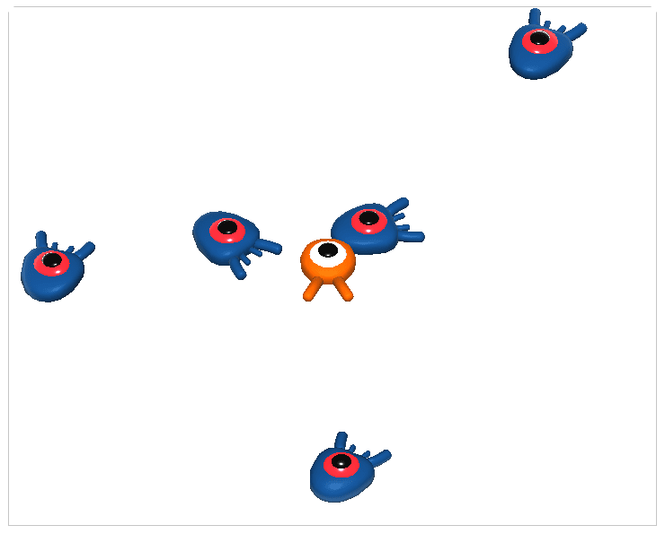
Hiện tại, chúng va vào nhau và trượt đi khi đường đi của chúng cắt nhau. Chúng ta sẽ giải quyết vấn đề này trong phần tiếp theo.